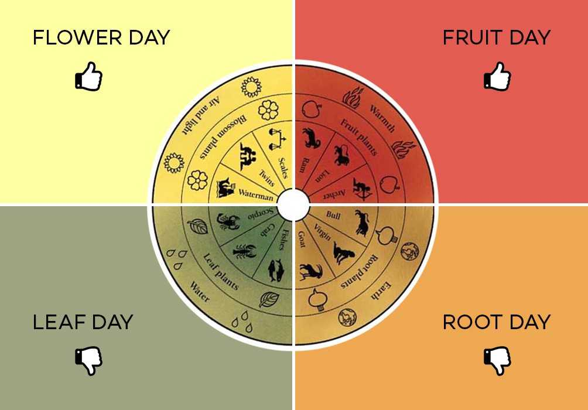

Los efectos del cambio climático impactan en cada una de nuestras actividades, y la agricultura es una de las más afectadas. La crisis ambiental provoca sequías, pérdida de cosechas e inundaciones. Ante esta situación, la escuela antroposófica Goetheanum propone el modelo agrícola biodinámico de Rudolf Steiner, que consiste en enfocar en la situación concreta del entorno local; comprender en profundidad y con conocimiento científico cómo es el funcionamiento del microecosistema, la interacción entre el suelo, la vegetación y los animales del entorno, para definir las propiedades del lugar y las posibilidades de nuestro cultivo. Ser conscientes de la explotación global es lo que nos permite tomar las medidas necesarias para remediarlo.
Las granjas biodinámicas cumplen con un criterio sustentable y cuidan el suelo, así se invierte en cultivos que tengan propiedades capaces de soportar los impactos del calentamiento global, y se logra una alta rentabilidad sin necesidad de usar agroquímicos.
El proyecto “Granjas Vivas” documenta la modalidad y el funcionamiento del modelo biodinámico de la agricultura.
Bindi te recomienda el podcast y los cursos lanzados por la Sección de Agricultura de Goetheanum, para que vos también puedas acceder a la técnica de agricultura biodinámica consciente. ¡No te lo pierdas!